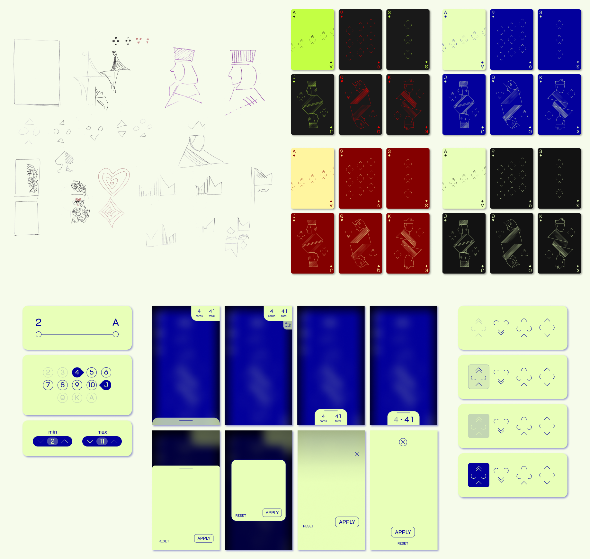
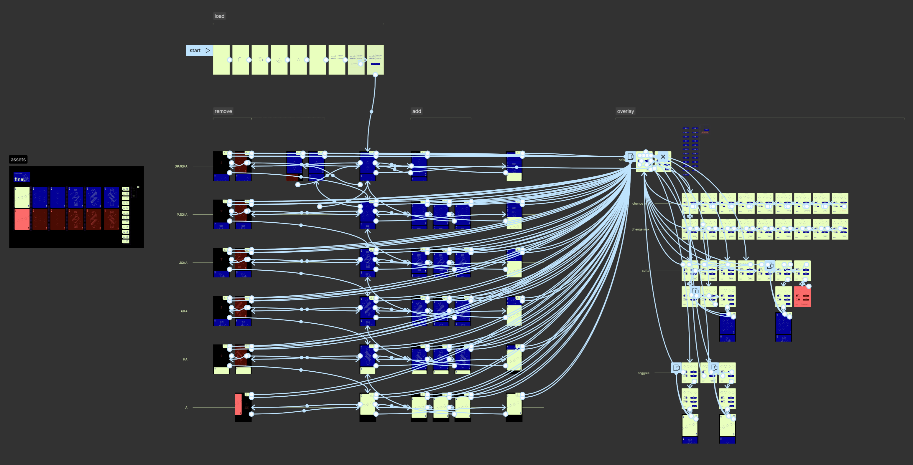
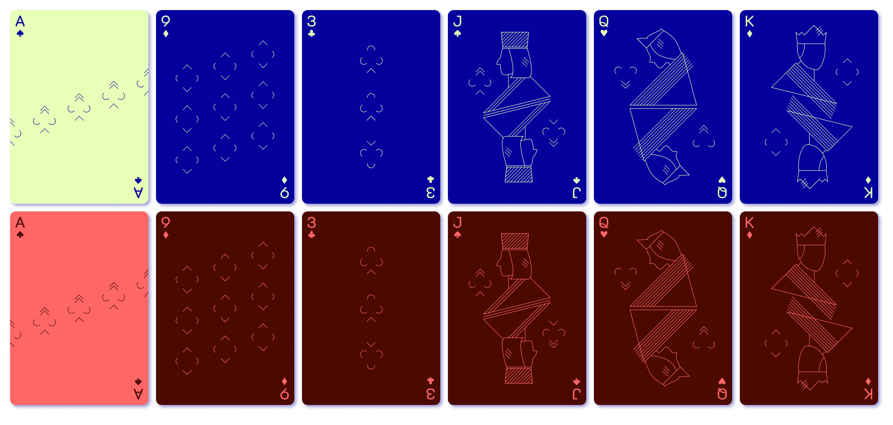
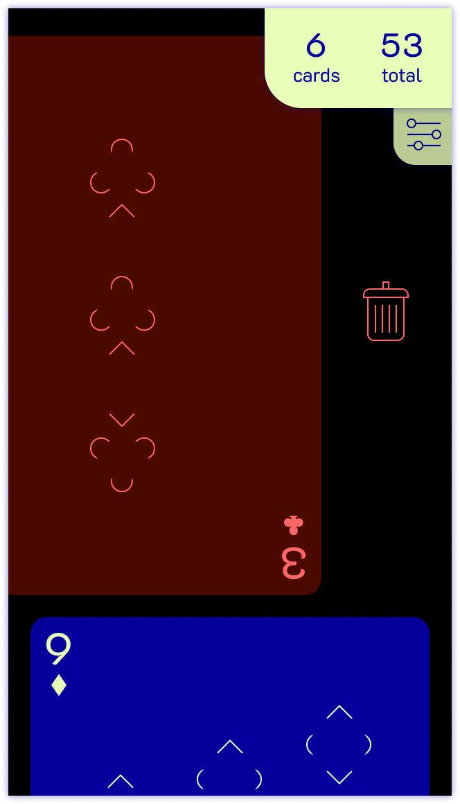
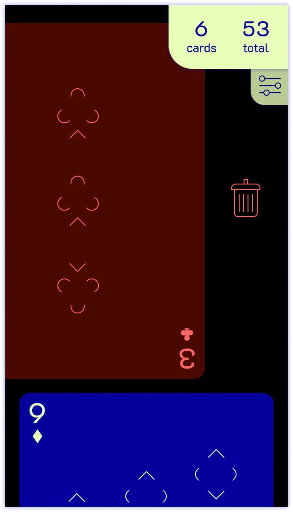

I - Introduction
This class project was my first time using Figma, getting used to frame-to-frame animation and scraping the surface of components. The prompt was to create a card app where you can add, remove, and filter cards, and I took it as an opportunity to explore minimalism, subtle animations, and hidden animations, relying on mental models for an intuitive experience.
II - Development
After establishing the graphic style, I went through many iterations of color scheme and interactability, with emphasis on exploring different methods to display overlays and filters.
 III - Final Design
The Cards
Main Frames
Interaction
 

Error Messaging
IV - Reflection
I enjoyed this project because it was the first time I really used Figma for interactive prototyping, and it was satisfying to see all of the many, many frames come together to bring the entire prototype to fruition. There are many aspects of Figma that I appreciate; namely the smart animation and components/variants/instances. It simplified things a lot. However, there were many points where I really, really wished I could just have a for-loop and not have to do everything by hand (for example, making add/delete screens for every variation, making the clickers, and making noodles on every frame).
I also liked that the iterative and peer-sharing process we did in class could both help me improve my designs, and open my eyes to other designs that I wouldn’t have thought of. I enjoyed seeing others’ work and the comparing the wide variety of approaches to the project.
And most importantly, I realized how difficult it is to make something simple yet understandable. The prompt for this app had extremely basic functions, but the possibilities to execute those functions were endless. We really had to stop and think about what works best, and what doesn’t. I aimed for a more simplistic approach with the least possible buttons, and it was difficult. Like the guy in the Apple WWDC18 lecture said, radical simplification is often a good thing to work towards, but can be very, very hard to do well. Still, I tried my best to keep things efficient, organized, and timely so that the user could feel comfortable in the app. I utilized many hidden/subtle interactions that the user would likely have a mental model for, making the app feel more natural and familiar.